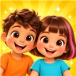
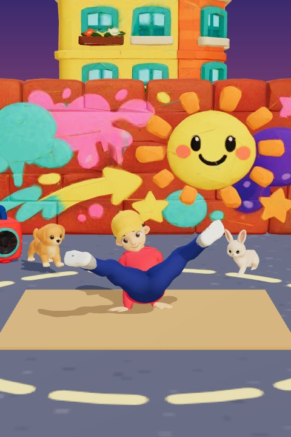
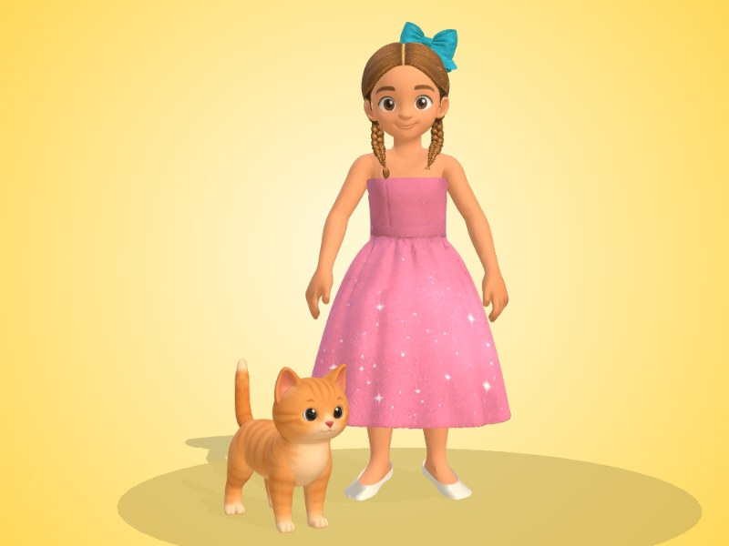

MiniMig™TestudgaveMiniMig™ – byg din egen figur, og leg med den
Byg en MiniMig i 3D, der ligner dig selv, en ven eller noget helt fantasifuldt. Dans breakdance på gadehjørnet, sæt dit eget show sammen i dansestudiet – og spil små spil, hvor du ikke kan tabe. Undervejs øver barnet sig i at tælle og tænke logisk. Et trygt børnespil til 3–6-årige – uden reklamer.
Første gang tager det lidt længere tid, fordi spillet skal hentes ned på enheden. Brug gerne wifi.





Bliv testfamilie
Vær med i vores lukkede Facebook-gruppe. Her hører I først, når der kommer en ny udgave af MiniMig, og I kan fortælle, hvad jeres børn kan lide – og hvad der driller. Gruppen er for voksne, og vi deler aldrig billeder eller navne af børn.
Bliv testfamilie på FacebookLukket gruppe – I beder om at komme med
Leg, der lærer
MiniMig er først og fremmest sjovt. Men der er gemt små læringselementer i legen, så barnet øver sig uden at tænke over det.
Tæl og læg sammen
Stjernerne fra spillene bliver til legemønter. I Stjernebutikken betaler barnet selv med mønter på 1, 2, 5, 10 og 20 og øver sig i at tælle og lægge sammen. En hjælpeknap lægger mønterne op for de mindste. Der bruges aldrig rigtige penge.
Bogstaver og de første ord
Alle knapper har både et billede og et kort dansk ord – Hår, Tøj, Hop, Dans. Billedet hjælper de mindste, og ordet viser vejen til læsning, så barnet begynder at genkende bogstaver og hele ord. Under Navn kan barnet skrive sit eget navn på trøjen, bogstav for bogstav, og høre det læst op.
Tænk logisk
Hvad skal man have på? Før et spil klæder barnet selv figuren på med det rigtige udstyr: hjelm, knæ- og albuebeskyttere til skateboard, badetøj og svømmebriller i havet, rumdragt og rumhjelm i rummet og skidragt og skibriller til skihop.
Rytme og rækkefølge
I Cypher bygger barnet en breakdance-runde af fire trin i den rigtige rækkefølge, og i Dansestudie sættes op til fem danse sammen til et show. Musikken følger takten i dansen.
De første engelske ord
Dansetrinene hedder det samme som i den rigtige danseverden: toprock, footwork, powermove, freeze, shuffle og twist. Så møder barnet de første engelske ord helt naturligt. Hele spillet kan også skiftes til engelsk.
Kæledyr, der følger med
Spar mønter sammen i Stjernebutikken, og køb en kat, en hund eller en kanin. Kæledyret følger din MiniMig rundt og er med i de fleste spil. Katten hopper og løber med, sætter sig og kigger på, når du slår kolbøtter, og svinger med halen, mens den venter på dig.


Masser af valg
Hud, hår, øjne, mund, trøjer, bukser, kjoler, sko, briller, hatte og ting at holde – og udstyr til spillene: skaterhjelm, badetøj, rumdragt, skidragt og meget mere. Baggrunde fra slot til rummet.
Bevæg dig og dans
Vink, hop, løb, jubel og kolbøtter. Dans breakdance i ringen i Cypher, eller sæt dit eget show sammen af hiphop, show, sjove danse og break i Dansestudie – med tre beats at vælge imellem.
Små spil
Hop over bolden, skateboard, snowboard, skihop, skattejagt, svømmeverden, rumrejse, gemmeleg og straffespark – i fem sværhedsgrader, og man kan ikke tabe. Før spillet får din MiniMig det rigtige udstyr på.
Stjerner og mønter
Stjernerne fra spillene bliver til mønter – jo sværere niveau, jo flere. Betal med mønter i Stjernebutikken for krone, prinsessekjole eller et kæledyr, der følger dig.
Hvert barn sin MiniMig
Søskende på samme iPad får hver deres figur, navn og stjerner. Barnet kan indtale sit eget navn.
Tryg for børn
Ingen reklamer, ingen konto og ingen dataindsamling. Alt gemmes kun på enheden – intet sendes til os.